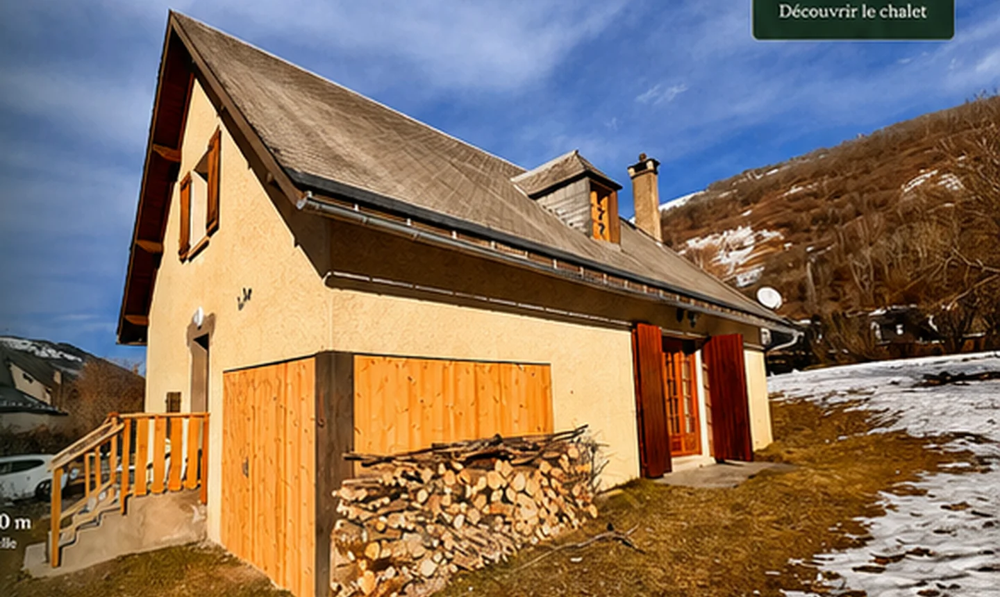

Salón con chimenea
Un espacio cálido para veladas en familia o con amigos.

Una casa acogedora en Loudenvielle, idealmente situada para sus aventuras y momentos de descanso durante todo el año.
Chez Marie-Laurence es su punto de partida para descubrir los tesoros de los Pirineos: senderismo, esquí, BTT, bienestar y gastronomía, todo muy cerca.
Descanse. Respire. Disfrute.
Ver el mapa interactivo ⌖
Visite cada estancia y visualice su estancia antes de reservar.
Un espacio cálido para veladas en familia o con amigos.

Todo lo necesario para cocinar como en casa.

4 habitaciones acogedoras para disfrutar de noches de descanso.

2 cuartos de ducha y 2 aseos separados para mayor comodidad.

Espacio seguro para sus bicicletas y material de montaña.
Obtén la mejor tarifa disponible reservando directamente tu estancia en Chez Marie-Laurence.
Ubicación, ruta, tiempo y consejos prácticos para llegar tranquilo a Loudenvielle.
La casa está situado en 13 Chemin de la Bayle, 65510 Loudenvielle, en el corazón del valle de Louron. Google Maps se carga solo a petición para preservar el rendimiento.
Prepare sus actividades según las condiciones actuales del valle.
--° / --°
En invierno, recuerde comprobar el equipamiento obligatorio de montaña antes de viajar.
Las tarifas varían según la temporada, la duración de la estancia y las opciones elegidas.
Tarifa dinámica según temporada y disponibilidad.
Precio aplicado a la reserva.
Sábana bajera, funda nórdica y funda de almohada.
Kit completo cama doble.
1 toalla + 1 toalla de baño.
Disponible bajo petición para bebés y niños pequeños.
No se aceptan animales para preservar la comodidad de todos los viajeros.
Sí, se puede aparcar delante dla casa. El terreno aún no está vallado.
La ropa de cama y las toallas son opcionales. También puede traer las suyas.
La llegada autónoma es posible mediante una caja de llaves. Las instrucciones se envían antes de la estancia.